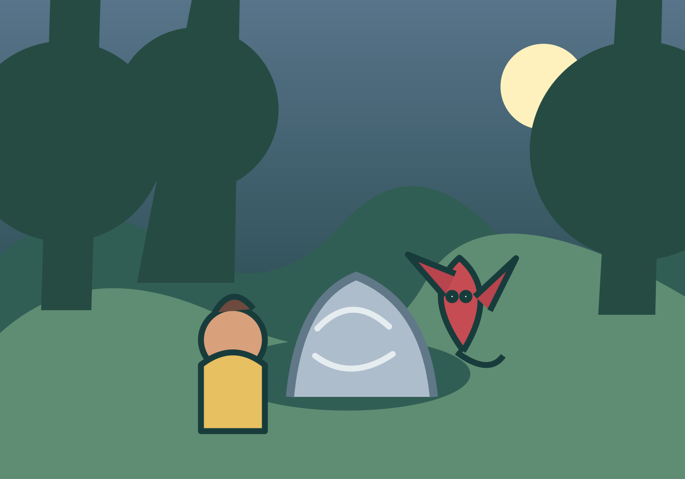
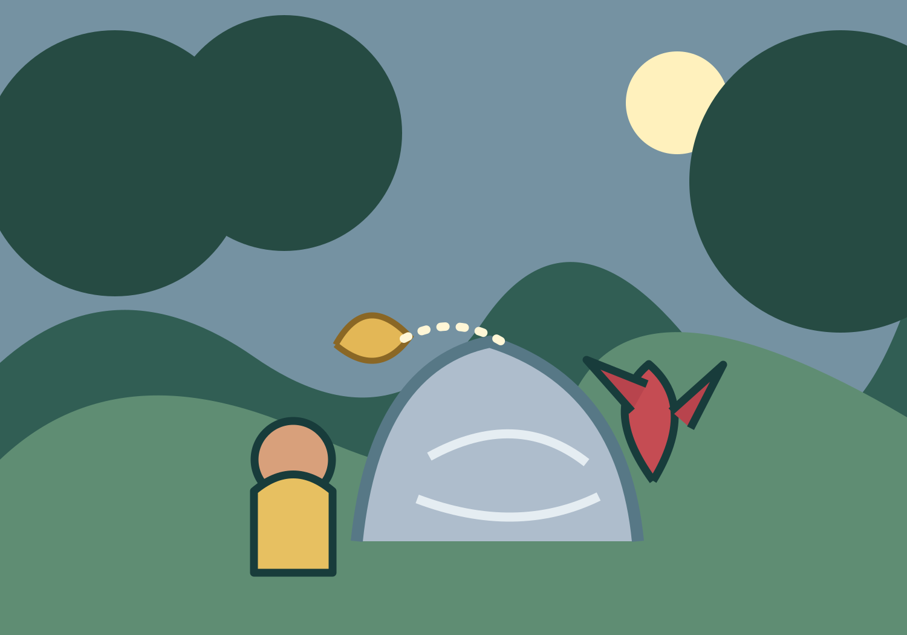
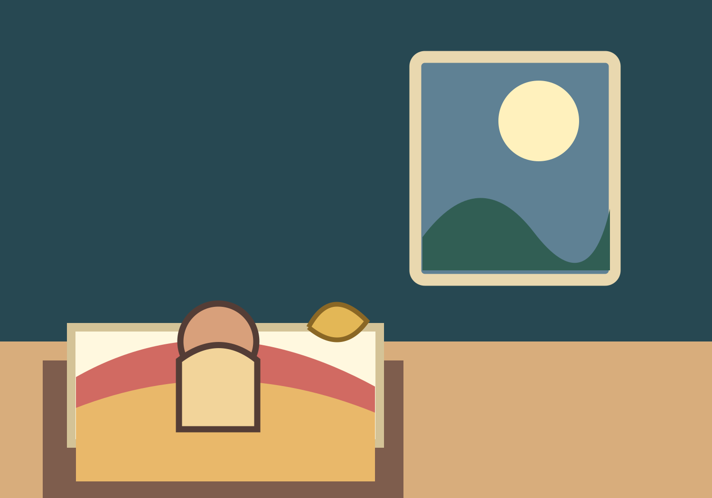

EN GODNATTSAGA FÖR 0–3 ÅR
Den lilla draken och den viskande stenen
En stilla saga om att lyssna tillsammans och låta ett litet löv få vila.
Tryck för att få sagan uppläst.

Något som susar
När kvällen blev blå tittade barnet ut genom fönstret. Bakom den gamla stenen blinkade den dolda skogen. Bara barnet kunde se den.
"Psst, psst, psst!" hördes det. Den lilla draken satt vid stenen med sina lingonröda vingar tätt intill kroppen.
"Stenen viskar," sa draken. "Eller så är den bara kittlig. Vad tror du?"

Lyssna först
Draken ville knacka på stenen med en pinne. Barnet höll mjukt upp en hand. "Vi lyssnar först."
De satt alldeles stilla. Då såg barnet ett gyllene löv som hade fastnat i en liten skåra. Vinden gjorde att lövet sa: "Psst, psst, psst!"
"Aha!" sa draken. "Det är lövet som dansar."
Ett mjukt farväl
"Ska vi dra loss det fort?" frågade draken.
Barnet skakade på huvudet. "Vi hjälper det försiktigt." Tillsammans lyfte de lövet med två små, varsamma händer.
Vinden tog emot lövet och lade det på den mjuka mossan. Nu var stenen tyst. Draken lade örat mot den och log.
"Tyst kan också vara fint," sa draken.
Hemma under täcket
Vid den gamla stenen vinkade Den lilla draken. "Vi ses när kvällen blir blå igen."
Barnet gick hem till sitt vanliga rum. Under täcket tänkte barnet på lövet som vilade mjukt i mossan.
Utanför fönstret var skogen stilla. Kanske dansade lövet lite igen, men bara så tyst att det inte störde någon.
God natt, lilla löv.
God natt, lilla drake.
God natt, du.
